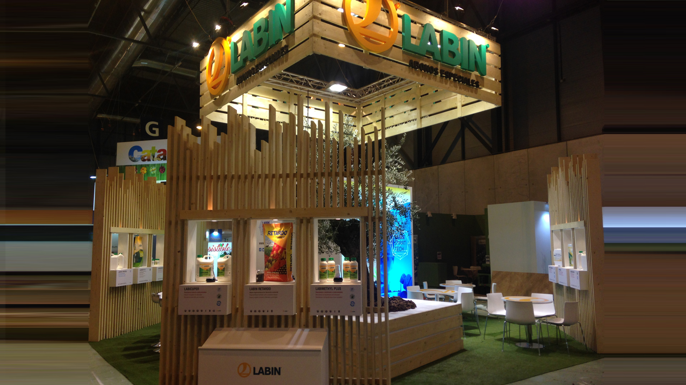
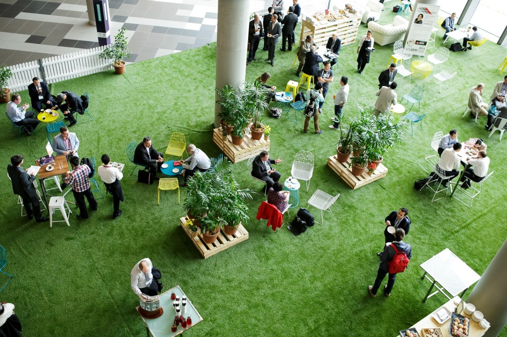
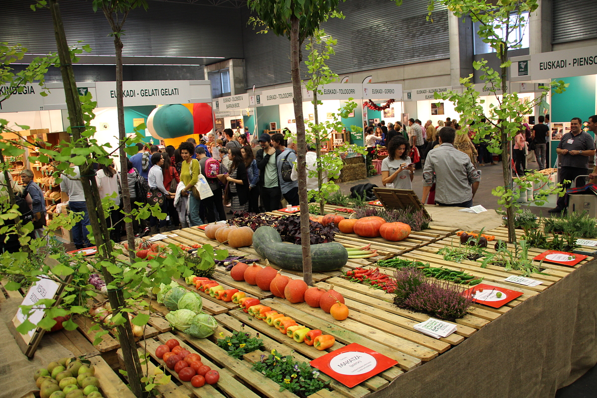
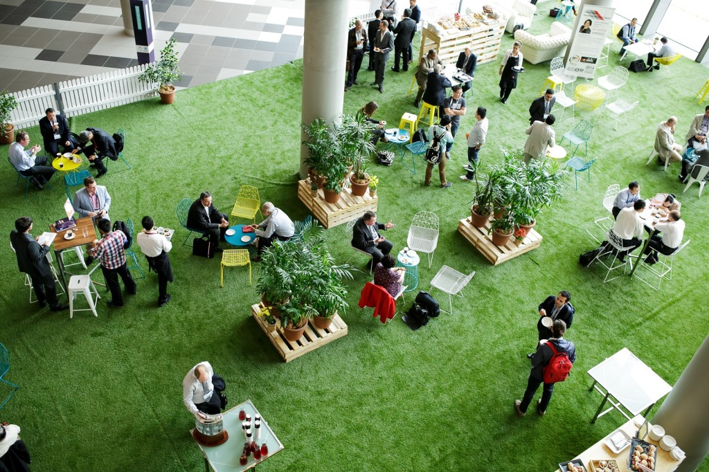
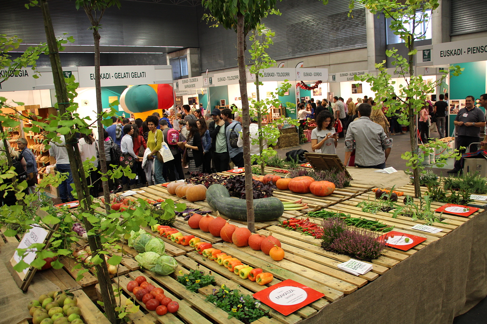
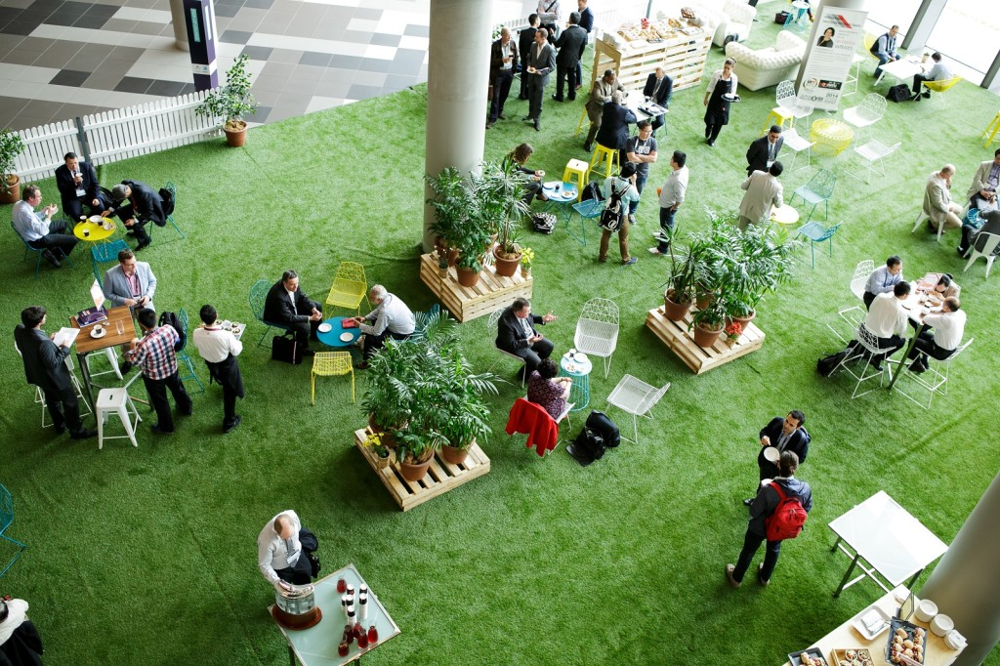
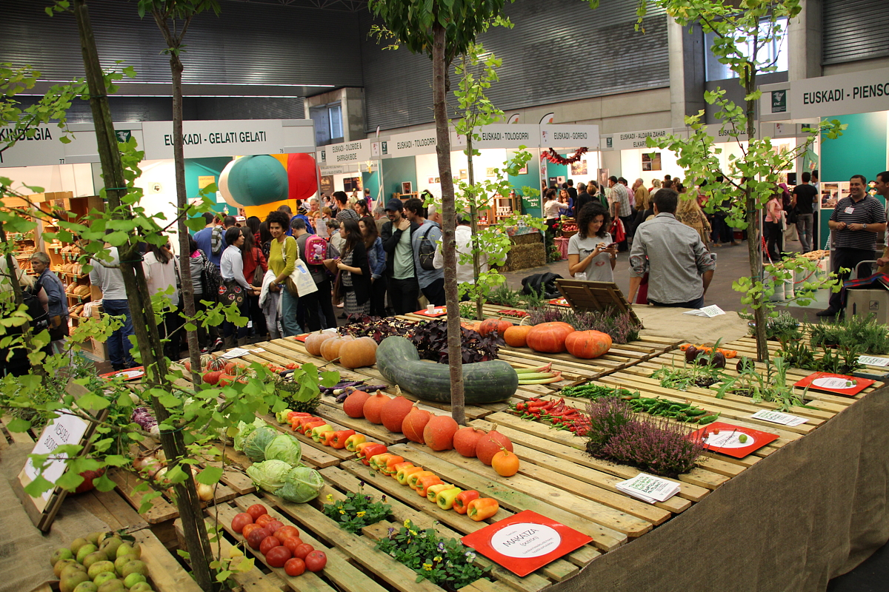
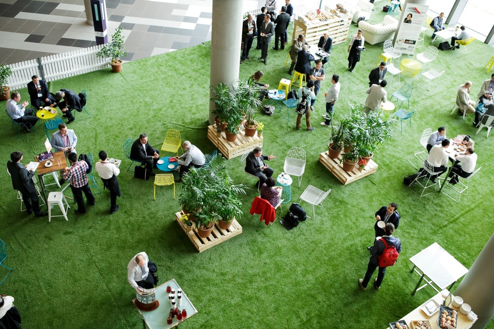
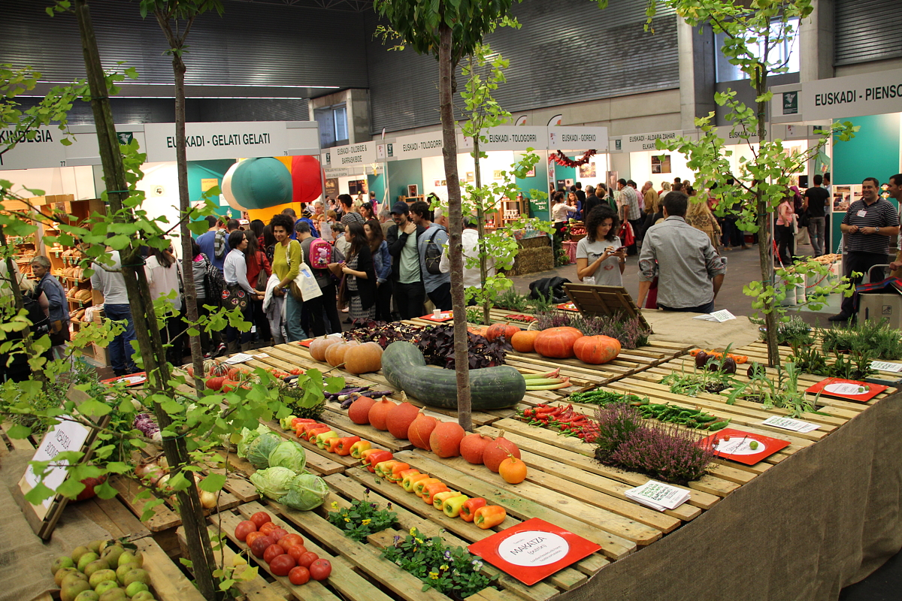

 





En un mundo donde la sostenibilidad es clave para nuestro futuro, nace , una plataforma diseñada para conectar personas, empresas y organizaciones que buscan crear eventos responsables con el medio ambiente. Aquí encontrarás un espacio intuitivo y colaborativo para gestionar conferencias, talleres y actividades ecológicas que promuevan el desarrollo sostenible.

